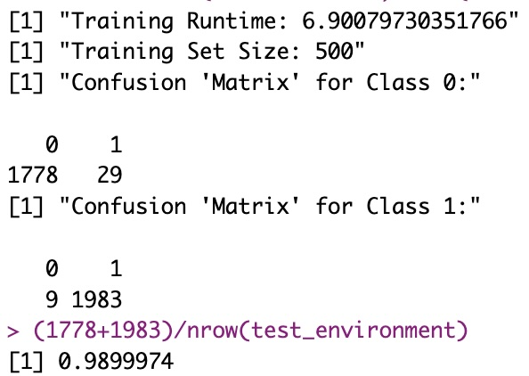
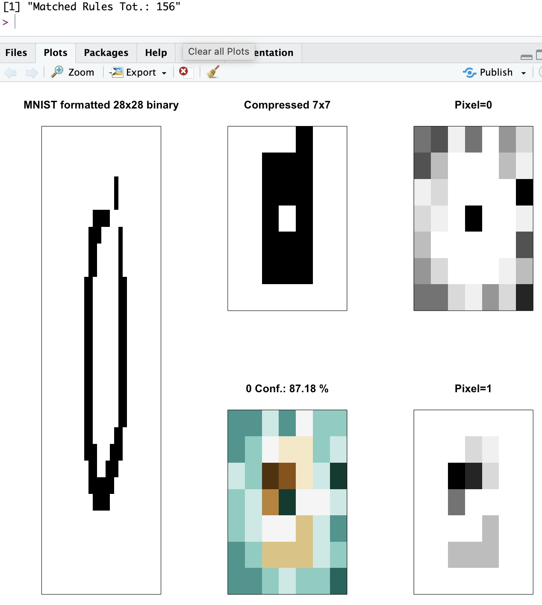
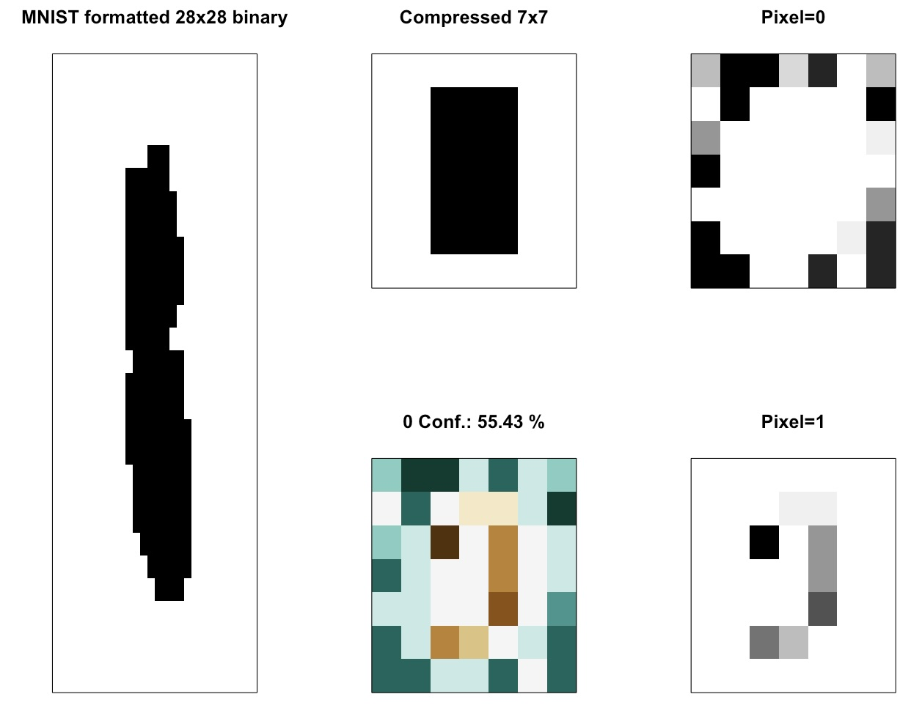
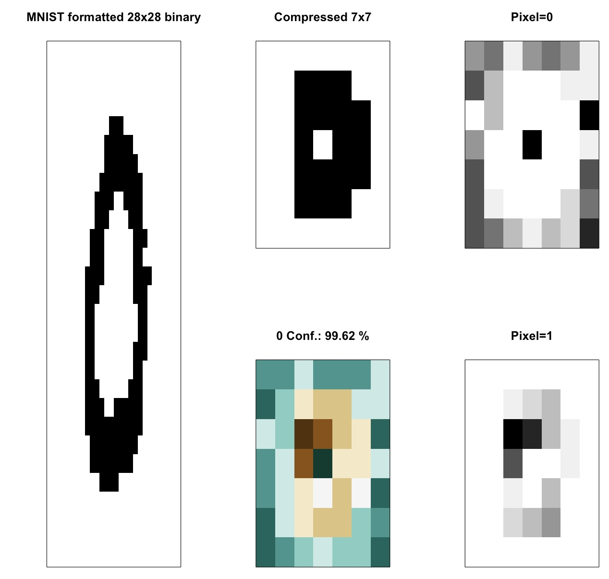
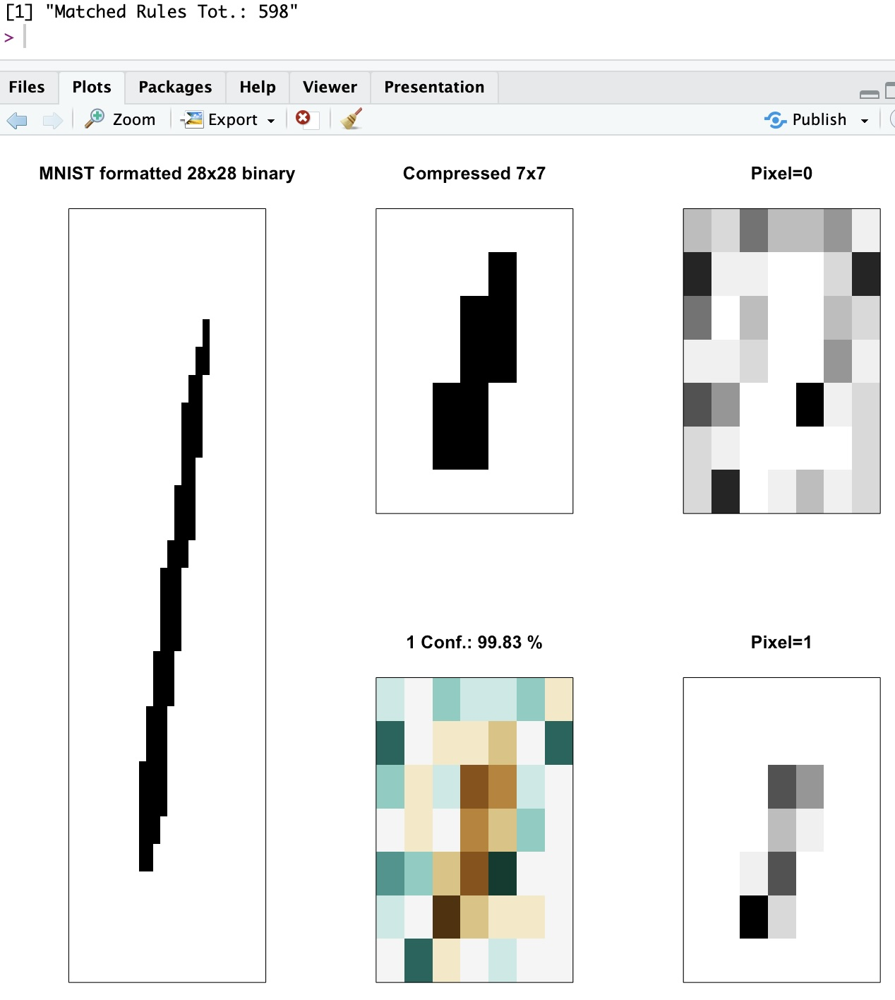
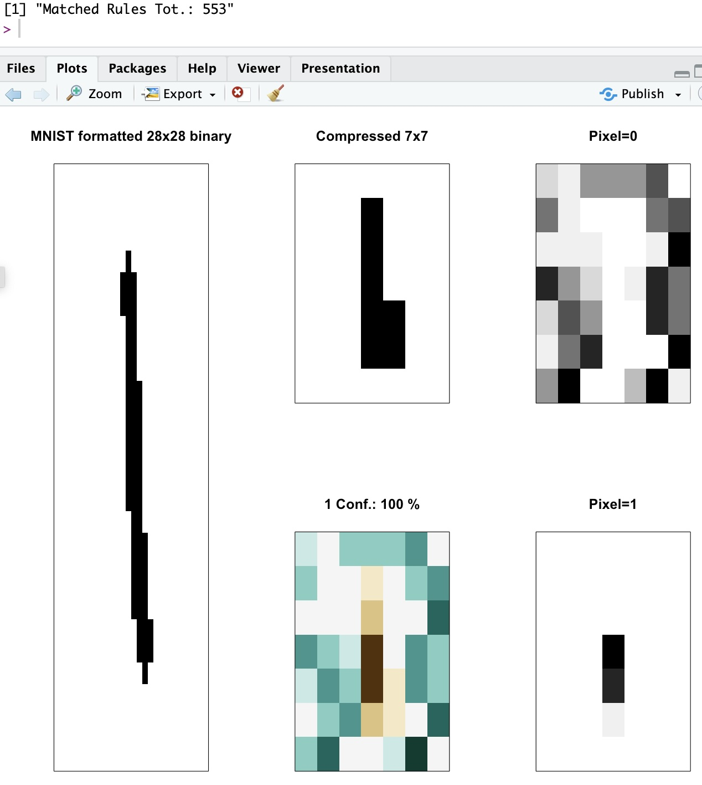

Walking the walk…
Foreword
I have been open about some of my worries with GenAI (and in fact Deep Learning with Neural Networks).
One of these worries had to do with the fact that DeepLearning outputs, while very precise in the immense majority of cases, are never easily interpreted. In other words, one cannot easily understand why a (deep) neural network (in the supervised learning case, for instance) makes the choices it makes.
They say “If you talk the talk… Walk the walk”. Well, here goes my own personal attempt at just that.
LCS outputs can be interpreted
I’ve shown in the past, how for data mining the rules themselves are showing how a classifier (separately, each of the classifier systems) actually “shows” where to put our attention (see https://kaizen-r.github.io/posts/2025-01-25_RLCS_4_DataMining/ for instance).
Well, today we’ll see how using LCS outcome can be used itself directly to help interpret the algorithm’s own choices.
And how that can be important.
And to be perfectly clear, this was one of the key reasons why I got interested in LCS as a family of algorithms in the first place!
Explainable AI
If you use a neural network trained to classify numbers, say on MNIST dataset, it will work. Most assuredly!
And training it can be faster than with the LCS (although, that is… not that clear. More on that some other time).
But more importantly: although the neural network output will work, you will have a hard time understanding why it chose one class or another. (At least, without SHAP, LIME, etc.)
Well, I present to you, interpreting LCS output as images classifier:

A few things happen here: First, I take MNIST, but as explained in the past, to contain the processing needs, I compress the input image first (that’s not part of the LCS algorithm 😁). Once I’m down to a 7x7 binary image, I use that as my state and I train the LCS with an environment of several such “states” (i.e. compressed pictures).
Different from a Neural Network, I do not need to train on that many examples (also already clarified in the past). So I train on only 500 samples, chosen randomly, and here I train for quite some time (almost 7 minutes, but single-thread, mind you) on said 500 samples.
As an output, I get a set of a few thousand “classifiers” (< 2500 in today’s example), all of which I have presented in the past also and won’t explain here again. Together, they form the System of classifiers.
But just for reference, I got a 99% correctly classified testing samples (out of 3799 of them, none of which had been seen for training).

Now on to the explainable part!
The visuals
Now tell me: Does the following set of visuals help in actually interpreting the LCS recommendation? (hint: I think it does!)
I’ve been trying to visualize why the LCS choices are indeed explainable. Of course, matching several rules makes it more confusing… But each rule that matches is a vote. If you can visualize the “ensemble” of rules/classifiers, all of which must have matched the sample, in our case hopefully you can see what the LCS is using as subset of reference for a given image.
Here an example, whereby a Zero image is correctly classified, among other reasons because it needs to have “lines around” and one “empty pixel” in the center! That’s enough for the LCS to decide that was a zero, and probably very few of the 156 rules that matched that test sample (all of which agreed on the correct class) would have been sufficient to explain the choice!
In other words, I try to show the ensemble and its choice in such a way that you see why the LCS decided on class 0 for that sample.
Good luck doing that with a Neural network!

Why is this good? 1/2
Explainable AI is important for many reasons.
Because of the very nature of ML (in that sense different from other approaches), sometimes (as rarely as it might be, 1% of the cases in today’s exercise) it makes a classification mistake. There are several possible reasons for that, but often it has to do with problems with generalization (overfitting).
Remember we used 500 samples for training, and have tested with 99% correct results on 3800 test samples!
(Note that part of the trick here is that my compressing the original images has removed more subtle differences that might have otherwise required better generalization… Fair enough!)
But I do hope in the exercise for today, the visualization of the LCS choices is helpful and indeed explainable.
At the very least, I feel it’s important to know, when an error is detected.
Why is it good? 2/2
Resistance to Adversarial attacks!
One important issue with some CNNs for instance for images classification is that they are sensible to a type of attack whereby someone can add noise to a picture, invisible to the human eye, and force the classifier to err the classification.
This will not happen with LCS, as I hope the visuals I introduced today clearly show. And that’s pretty cool, too.
Locating errors
For our exercise today, a few (1%) of the examples were wrongly classified, and in all cases the confidence of the proposed classification was below 65%.
As the LCS output is a “system of classifiers”, whereby a new sample matches several “rules”, and given in our exercise the high level of compression with loss of information, it was no surprise that some examples were difficult based on the compressed image (I wouldn’t have been able to do any better myself, without the original image).

In summary, they matched several classifiers, some of which were voting for one class, while the rest for the other… Which is reflected in the low confidence of the outcome!
And overall, my code for LCS did a great job, given what they see as (compressed) input.
A few more examples (for no reason)

It doesn’t always happen, but here again a central empty cell is quite self-explanatory. Moreover, one can tell the line needs to spread horizontally for the set of classifiers to agree on a Zero class, here. (That happens more often indeed)

You can see in the above, how the width of the line is constrained by the “empty cells” recommendations (“Pixel=0”). Clearly the line for the one is apparent (“Pixel=1”). And the resulting visual shows (green) empty cells surrounding (maroon) full cells, indeed.

Conclusions
Look, I’m not kidding myself. I will not magically shift the focus of the whole AI community towards the LCS algorithm, overnight.
Plus, it’s not a perfect algorithm. Many hyper-parameters to consider, not particularly fast (although… to be discussed)…
But it does work, requires (at least in today’s example) relatively few (ideally well chosen) samples for training, and is clear in why it makes the decisions it makes, which as explained is (at least from my perspective) very important.
I do hope, however, that maybe it shows there are alternatives to neural networks, and if nothing else, I would expect this exercise might be considered useful, as a complementary approach: Keep using your neural networks, deep learning and what-not, but maybe you can use an LCS on the side, to confirm (with a level of confidence included, and visuals that express the why) the neural net choices…
And although I still have a lot to do, I hope when it’s ready, my RLCS package will participate in making that a reality :)